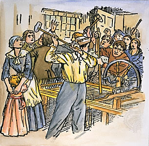

|
I salari erano determinati da una serie di fattori, tra cui il tipo di lavoro, la disponibilità di manodopera e le condizioni economiche locali.
Agricoltura: La maggior parte della popolazione era impiegata nell'agricoltura, e i salari variavano notevolmente a seconda delle regioni e dei tipi di colture. In molte zone rurali, gli agricoltori dipendevano da salari stagionali o da un compenso in natura, come cibo, alloggio o una parte del raccolto.
Industria: Nei centri urbani in rapida crescita, come Londra e Manchester, la nascente industria manifatturiera offriva lavoro in fabbriche tessili, fonderie e altre industrie emergenti. Gli operai di queste fabbriche ricevevano salari modesti, spesso calcolati su base giornaliera o settimanale, e le condizioni di lavoro erano generalmente dure.
Artigianato e mestieri: Le persone coinvolte in mestieri artigianali come falegnami, fabbri o calzolai potevano guadagnare salari variabili, a seconda della loro abilità e della domanda per i loro servizi nella comunità locale.
Professioni specializzate: Medici, avvocati e altri professionisti godevano di salari più alti rispetto alla media della popolazione, ma anche in questo caso c'era una vasta gamma di retribuzioni a seconda del prestigio e della clientela.
Schiavitù: Nelle colonie americane e in altre parti del mondo in cui era praticata la schiavitù, gli schiavi non ricevevano salari poiché erano considerati proprietà dei loro padroni.

|
|